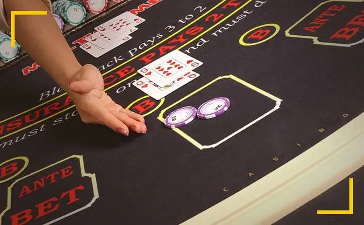

Dies sind die Casino Spiele mit den höchsten und niedrigsten Casino Bankvorteil
Auch wenn Sie im Einsatzcasino spielen, müssen Sie sich mit dem Bankvorteil für jedes Casinospiel auseinandersetzen. Der Bankvorteil ist das, woraus das Casino letztendlich seinen Gewinn bezieht und ist pro Spiel und pro Einsatz bekannt, da er auf einer mathematischen Berechnung basiert. Das Sinn am Casino Bankvorteil ist, dass er sich auf lange Sicht vor allem zu Gunsten des Casinos auswirkt. Wer nur kurz im Casino spielt und dabei einen Gewinn erzielt, tut also gut daran, den Gewinn mitzunehmen und nicht weiter zu spielen. Leider ist das für viele Menschen leichter gesagt als getan.Wenn Sie trotz Ihrer Gewinne weiterspielen, besteht die Gefahr, dass Sie Ihre Gewinne nach einiger Zeit wieder verlieren.
Wer im Stake Casino spielt und seine Gewinnchancen erhöhen möchte, tut gut daran, Spiele mit dem höchsten Casino-Vorteil zu meiden und nur Spiele mit einem sehr niedrigen Bankvorteil zu spielen.
Das Casino Bankvorteil in der Praxis
Bei jedem Spiel, das Sie im Casino spielen können, hat das Casino einen leichten Vorteil gegenüber den Spielern, die das Spiel spielen. Um zu verdeutlichen, wie das funktioniert, sehen wir uns die Wettmöglichkeiten beim europäischen Roulette an. Beim europäischen Roulette wird nur eine einzige Null verwendet. Bei einer anderen Roulette-Variante, dem amerikanischen Roulette, gibt es neben der einzelnen Null auch die Doppelnull.
Wenn Sie europäisches Roulette spielen und nur auf eine der Zahlen setzen, haben Sie 36 Wettmöglichkeiten. Sie können zwar auf die Zahlen 1 bis 36 setzen. Aber wenn Sie gewinnen, erhalten Sie nicht das 36-fache Ihres Einsatzes, sondern nur das 35-fache. Theoretisch hat jede Zahl die gleiche Chance, zu fallen.
Angenommen, Sie spielen 36 Spielrunden und in jeder Runde fällt eine andere Zahl. Sie haben immer auf dieselbe Zahl gesetzt. Dann haben Sie nach 36 Runden 36 € verloren, aber Sie haben mindestens einmal gewonnen. In diesem Fall gewinnen Sie 35 €, haben aber 36 € gesetzt. Der Vorteil dieses einen Euros ist für das Casino. Der Bankvorteil wird immer in Prozenten angegeben.
Beim europäischen Roulette hat das Casino einen Bankvorteil von 2,71 %. Da beim amerikanischen Roulette eine zusätzliche Wettmöglichkeit, nämlich die Doppelnull, verwendet wird, ist der Bankvorteil bei dieser Variante mit 5,27 % wesentlich höher.
Welches sind die spiele mit dem höchsten und dem niedrigsten Bankvorteil?
Jedes Spiel im Casino hat einen eingebauten Bankvorteil, aber dieser Vorteil ist nicht bei jedem Spiel gleich hoch. Beim Roulette liegt der Bankvorteil bei 2,71 % und kann bis zu 5,27 % betragen, wenn Sie amerikanisches Roulette spielen. Darüber hinaus haben Roulette-Wetten wiederum ihre eigenen Bankvorteil e. Nebenwetten zum Beispiel haben den höchsten Bankvorteil (bei jedem Spiel). Dieser kann manchmal einen Bankvorteil von mehr als 20 % erreichen. Er kann aber auch noch höher ausfallen!
Bingo und Keno zum Beispiel haben einen Bankvorteil von bis zu 30 % und Money Wheel-Spiele haben einen Bankvorteil von 22 %. Video-Slots, Spielautomaten und Spielautomaten, die zu den beliebtesten Spielen im Casino gehören, haben einen Bankvorteil von durchschnittlich 2 % bis 10 %.
Spielen Sie Blackjack, Baccarat und Videopoker!
Clevere Spieler, die von einem niedrigen Bankvorteil profitieren möchten, entscheiden sich für Blackjack, Baccarat und Video-Slots. Dies sind die günstigsten Spiele im Casino mit einem Bankvorteil von etwa 1 %. Bei Videopoker und Blackjack können Sie diesen Bankvorteil sogar noch weiter senken, indem Sie mit einer Strategie spielen.
Wenn Sie es richtig anstellen, können Sie den Bankvorteil beim Videopoker auf bis zu 0,44 % senken, und wenn Sie mit der Blackjack-Grundstrategie spielen, können Sie den Bankvorteil auf 0,5 % senken. Videopoker und Blackjack gehören zu den wenigen Spielen, bei denen Sie den Bankvorteil nicht nur durch Glück, sondern auch durch ein wenig Geschick und Strategie senken können. Aus diesem Grund werden Sie niemals professionelle Spieler sehen, die ein anderes Spiel als Video Poker oder Blackjack spielen, zum Beispiel.
Kluges Spielen bei Spielen mit hohen Casino Bankvorteil en
Wer an Spielautomaten, Videospielautomaten spielt, hat zwar Spaß daran, geht aber ein hohes Verlustrisiko ein. Nicht umsonst ist mehr als die Hälfte der Fläche eines landbasierten Casinos mit Spielautomaten und Videospielautomaten gefüllt. Sie sind die absoluten Geldmacher des Casinos. Wenn Sie an einem Spielautomaten oder Videospielautomaten spielen, ist es mehr oder weniger garantiert, dass Sie Ihr gesamtes Geld verlieren. Es sei denn, Sie haben gelegentlich Glück und sind klug genug, nach einem großen Gewinn sofort aufzuhören. Um als Spieler in einem Casino erfolgreich zu sein, sollten Sie daher zumindest Spielautomaten und Videospielautomaten meiden.
Keno und Bingo können auch viel Spaß machen, aber mit einem Bankvorteil von bis zu 30 % sind sie sehr teuer. Außerdem sollten Sie sich als Regel merken, dass Sie niemals Nebenwetten einsetzen. Nebenwetten werden auch als Trottelwetten bezeichnet, weil sie geringe Gewinnchancen und einen sehr hohen Casino Bankvorteil haben.
Vergewissern Sie sich immer, wie hoch der Bankvorteil eines Spiels ist.
Jeder, der in einem Krypto-Casino spielen will, sollte zumindest wissen, was der Hausvorteil ist und welchen Einfluss er hat. Wenn Sie sich entscheiden, ein Spiel mit einem hohen Hausvorteil zu spielen, wissen Sie sofort, dass die Chance zu verlieren viel höher ist. Aber wenn Sie Blackjack, Baccarat oder Videopoker spielen, wissen Sie auch, dass die Gewinnchance am Ende größer ist. Wenn Sie dann auch das Wissen und die Fähigkeit erlernen, mit Strategie zu spielen, senken Sie den Standard-Hausvorteil noch weiter und erhöhen Ihre Gewinnchancen erheblich.